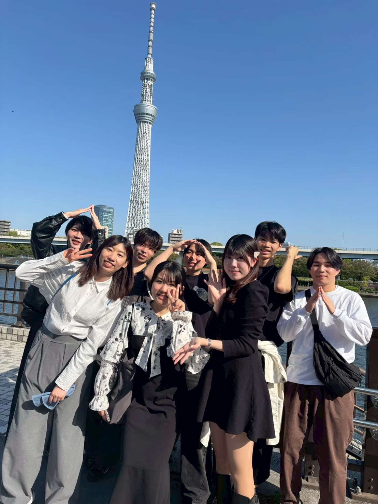
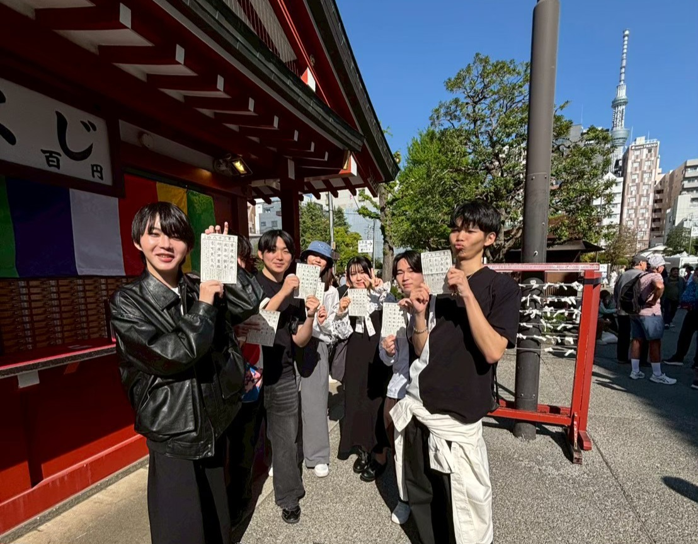

FRIENDSHIP
仲間として迎えてくれた
言葉が完璧でなくても、
人はつながることができる。
日本へ来たばかりのころ、
一番難しいと感じたのは日本人とのコミュニケーションでした。
授業では先生がゆっくり話す内容を理解することができました。
しかし、
日本人の学生が自然なスピードで話している会話になると、
なかなかついていくことができませんでした。
大学のサークルの新入生歓迎イベントに参加する機会がありました。
その日は、
みんなで浅草寺と東京スカイツリーへ行く予定でした。
集合場所へ向かう途中、
私は少し緊張していました。
日本語でうまく話せなかったらどうしよう。
みんなの会話についていけなかったらどうしよう。
そんな不安を抱えていました。
しかし、
集合してしばらくすると、
先輩や新入生たちが積極的に話しかけてくれました。
私が日本語でうまく答えられない様子を見ると、
ある新入生が自然に英語へ切り替えてくれました。
「日本の生活には慣れた？」
「趣味は何ですか？」
そんな簡単な会話から始まりました。

話題はだんだん趣味の話へ移っていきました。
たまたま東京ディズニーランドの話になりました。
「どのキャラクターが好き？」
「おすすめのアトラクションがあるよ。」
「ハロウィーンの時期はすごく楽しいよ。」
そんな話をたくさんしてくれました。
日本語と英語が混ざった会話でしたが、
みんな私が話しやすいようにゆっくり話してくれました。
気がつくと、
最初の緊張はほとんどなくなっていました。
浅草寺でおみくじを引いたときも、
意味が分からない漢字を一緒に読んでくれました。
その日一日を通して、
私は日本語をペラペラに話したわけではありませんでした。
しかし不思議と孤独を感じることはありませんでした。
中国では、
友達になるとすぐに仲良くなり、
よく話しかけます。
カナダでも、
初めて会った人と気軽に話す人が多いです。
一方で、
日本では最初は少し距離があるように感じました。
しかしその距離感には、
相手への気づかいがあることが分かりました。
無理に日本語を話させるのではなく、
英語も使いながら話してくれました。
そのおかげで、
私は安心して会話に参加することができました。
この経験から、
日本では相手の気持ちや立場を考えながら人との関係を作ることを大切にしていると感じました。
日本での人間関係を通して学んだのは、
相手を思いやる小さな気遣いが、
人を安心させる大きな力になるということです。
中国やカナダで学んだこととはまた少し違う、
日本で気づいた優しさの面でした。